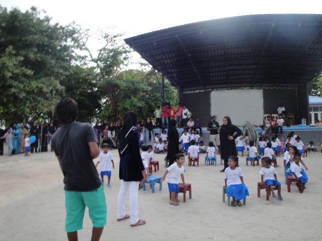
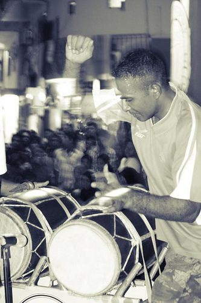

Kendhoo is known across the Maldives for one tradition above all: centuries of herbal healing. It's also, simply, a Maldivian island in full swing — drumming, feasting, fishing and weaving.
Of everything Kendhoo is known for nationally, this is the one most Maldivians mention first: traditional herbal medicine, practised here for generations and sought out from across the entire country.
Dhivehi beys — "islanders' medicine" — is the umbrella term for the Maldives' traditional healing system, sometimes also called Dweep Unani. It grew at a genuine crossroads: early knowledge likely arrived with Ayurvedic practice from India and Sri Lanka, was layered with the Greek-derived humoral medicine known as Unani after the Maldives' conversion to Islam, and absorbed further influence from Arab, Persian and Chinese seafarers. The result is a uniquely Maldivian synthesis, refined island by island and healer by healer.
Traditional healers are known as beysverin (male) and beysveriamma (female). Their knowledge — which plants treat which ailment, which roots ease a fever — is passed down by apprenticeship rather than textbook, although a foundational written record does exist: the 1937 treatise Tibbi Fuqara fee Hikamadhil Umara, by the Seenu Atoll scholar El-Sheikh Ahmed Didi, who cross-referenced more than twenty Arabic medical texts to formalise what had long been an oral tradition.
Wikipedia's entry on Kendhoo puts it plainly: the island "is well known for its traditional herbal medicine; people from all across the country and even from other countries visit for treatments." That reputation didn't arrive with tourism — it has been earned, household by household, over a very long time.
A respectful note: Dhivehi beys is living, community-owned knowledge, not a tourist commodity. If you're curious about it on Kendhoo, the most respectful approach is to ask your guesthouse host whether a visit or conversation with a local practitioner can be arranged — rather than treating it as a spectacle.

🥁 BoduberuNo Maldivian festival feels complete without Boduberu — "big drum" — the country's signature music. A handful of coconut-wood drums, a lead singer and a chorus build from a slow opening into a galloping, almost trance-like climax, while dancers spin through the crowd. It's believed to have roots in East African rhythms, and today it's simply what a good night on any island sounds like.
Alongside it survive older, quieter forms: Thaara, a seated, semi-religious tambourine performance for men; Bandiyaa Jehun, a graceful women's dance performed tapping rhythms on metal water pots; and Dhandi Jehun, a stick dance performed at Eid and national celebrations, with steps that vary from atoll to atoll.
The end of Ramadan begins with morning prayers, then a day of shared feasts — homes open their doors to family, neighbours and visiting friends, with sweet bondibai and grilled fish on every table, followed by games into the evening.
Marking the Hajj season, this is the longest public holiday in the Maldives and the most-travelled time of year, as people return to their home islands. Expect Boduberu, drumming competitions, and the year's biggest communal meals.
National Day honours Muhammad Thakurufaanu's 1573 victory over Portuguese occupiers; Independence Day on 26 July marks the end of British protectorate status — both occasions for flags, ceremonies and community gatherings.
Kendhoo's school and kindergarten mark Children's Day with games, costumes and performances in the schoolyard — one of many small, warm community rituals that rarely make a guidebook but say a lot about island life here. This is an island that celebrates its youngest residents just as visibly as its oldest traditions.
Long before tourism, Kendhoo's economy ran on two things: fishing and thatch-making. Screw-pine and coconut-palm leaves are still woven into roofing thatch and mats by island households — a craft shared across Baa Atoll, where nearby Thulhaadhoo is famous nationally for its lacquerwork. A growing number of Kendhoo's youth now also work seasonally in nearby resorts, alongside small businesses, construction and retail — a community balancing old livelihoods with new ones.
Hanifaru Bay's manta aggregations, quiet Fasdūtherē sandbanks, and a full list of local excursions are all close by.
Things to do →